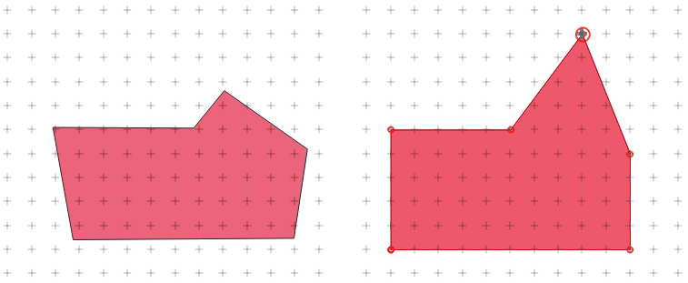
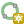
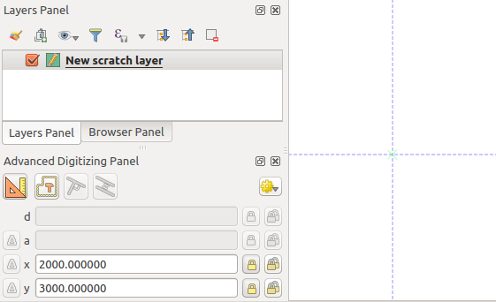
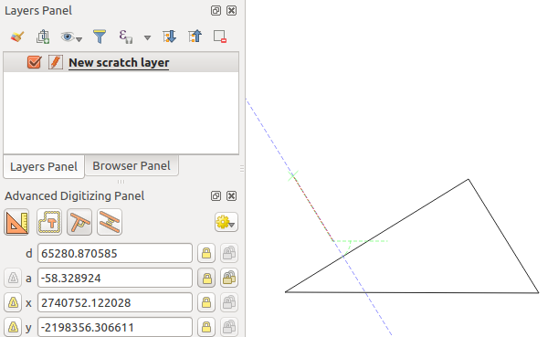

重要
翻訳は あなたが参加できる コミュニティの取り組みです。このページは現在 96.62% 翻訳されています。
16.3. 編集
QGISは、OGR、SpatiaLite、PostGIS、MS SQL Server、Oracle Spatialのベクタレイヤやテーブルを編集する様々な機能を備えています。これらは、2Dまたは3Dジオメトリタイプのものです。
注釈
GRASSレイヤを編集する手順は異なります。詳細は GRASSベクタレイヤをデジタイズして編集する のセクションを参照してください。
注意
同時編集
QGISは、他の人があなたと同時に同じ地物を編集していても追跡しません。最後に編集を保存した人が勝ちます。
16.3.1. スナップ許容範囲と検索半径の設定
メニューには、QGISの編集ツールのデフォルトの動作を設定するためのパラメータがいくつかあります。詳細な情報は デジタイズの設定 を参照してください。
ベクタレイヤのジオメトリを最適かつ正確に編集するためには、地物の頂点のスナップ許容量と検索半径を適切な値に設定する必要があります。 スナップ グループはこれに関連する、スナップ許容量と検索半径の扱いに関するオプションを提供します。
スナップ許容量：新しい頂点を追加したり既存の頂点を移動するとき、接続しようとしている頂点またはセグメントに最も近いものを検索するためにQGISが使用する距離がスナップ許容量です。カーソルがスナップ許容範囲内にない場合は、QGISは既存の頂点またはセグメントにスナップするのではなく、マウスボタンを離した場所に頂点を落とします。
この許容量の設定はスナップを行うすべてのツールに影響し、新しいレイヤやプロジェクトにデフォルトとして適用されます。ただしこの設定は、レイヤレベルで上書きすることができます（ スナップとデジタイズのオプション 参照）。
検索半径： 頂点編集用検索半径 は、地図上をクリックしたときに選択する頂点を
検索するためにQGISが使用する距離です。カーソルが検索半径内にいない場合、QGISは編集のために頂点を見つけ選択することはありません。
スナップ許容量や検索半径は 地図上の単位 または ピクセル で設定します。ちょうど良い値を設定するには試行錯誤する必要があるかもしれません。大きすぎる値を設定した場合、特に近接した多数の頂点を扱う場合には、QGISは間違った頂点にスナップすることがあります。検索半径を小さくすると、動かしたい頂点にヒットさせるのが難しくなります。
16.3.2. スナップとデジタイズのオプション
グローバルな Snapping and Digitizing Settings (スナップモード、許容値、単位...) は、プロジェクト内で メニューからオーバーライドすることができます。Snapping and Digitizing Options では、その他のプロパティ（スナップレイヤー、スケールリミット、トポロジ...）も設定することができます。
デフォルトでは、  スナップを有効にする ボタンを押すかキーボードの S を押すまでは、プロジェクトにおいてスナップは無効化されています。スナップモード、スナップ許容量の値と単位はスナップツールバーでも設定できます。
スナップを有効にする ボタンを押すかキーボードの S を押すまでは、プロジェクトにおいてスナップは無効化されています。スナップモード、スナップ許容量の値と単位はスナップツールバーでも設定できます。
16.3.2.1. スナップのプロパティ
レイヤへのスナップには、3種類の選択肢があります：
すべてのレイヤ ：これはプロジェクト内のすべての可視状態のレイヤに対するクイック設定で、ポインターがすべての頂点やセグメントにスナップします。多くの場合、このスナップモードを使用すれば十分ですが、多数のベクタレイヤがあるプロジェクトでこのモードを使用する場合には注意が必要です。パフォーマンスに影響を及ぼすことがあります。
アクティブレイヤ ：スナップに使用するのはアクティブレイヤのみです。編集中のレイヤ内でトポロジの一貫性を確保するのに便利な方法です。
詳細設定 ：レイヤ単位でスナップモードの有効化や許容量とその単位、重なりの扱いや縮尺範囲を調整できます（ 図 16.78 参照）。あるレイヤの編集で、その頂点を他のレイヤにスナップさせたい場合、ターゲットとなるレイヤにチェックを入れ、スナップ許容量に大きな値を入れるようにしてください。スナップオプションダイアログでチェックが入っていないレイヤに対しては、スナップが発生しません。
When moving or creating vertex, you can opt for the following snapping modes:
 Vertex
Vertex Segment: snaps along a line or a polygon perimeter.
If topological editing is enabled, then a new vertex is added at the snapping location.
Segment: snaps along a line or a polygon perimeter.
If topological editing is enabled, then a new vertex is added at the snapping location.Area: guarantees that the snap point lies anywhere on a polygon's area, not necessarily on its boundary
 Centroid: snaps to the centroid of the geometry of a feature.
In case of a multipart geometry, the target point may be distinct from the existing parts.
Centroid: snaps to the centroid of the geometry of a feature.
In case of a multipart geometry, the target point may be distinct from the existing parts.Line Endpoints: snaps to the first or last vertex of every part of a line or polygon feature.
QGISでは スナップ の種類に応じてさまざまな スナップ アイコンを表示します：
頂点へのスナップ：四角形アイコン |
セグメントへのスナップ：砂時計型アイコン |
交点へのスナップ：バツ印アイコン |
グローバル設定の デジタイズ において、これらのアイコンの色を変更できます。
スナップ許容量は、プロジェクトの 地図上の単位 または ピクセル のいずれかで設定できます。 ピクセル を選択する利点は、さまざまなマップの縮尺でスナップ許容量を一定に保つことができることです。通常は10から12ピクセルが適当な値ですが、ディスプレイのDPIにもよります。地図上の単位を使用すると、許容量を実際の地上距離と関連付けることができます。例えば、要素間の最小距離の設定がある場合には、このオプションはお互いに近すぎる頂点を追加しないようにするのに役立ちます。
図 16.78 スナップオプション（詳細設定モード）
注釈
デフォルトでは、可視状態の地物（スタイルが表示されている地物、ただしシンボロジが "シンボルなし" のレイヤを除く）のみにスナップできます。非表示の地物にもスナップできるようにするには、 タブで  非表示の地物に対してもスナップを有効にする にチェックを入れます。
非表示の地物に対してもスナップを有効にする にチェックを入れます。
Tip
デフォルトでスナップを有効にする
タブで、すべての新規プロジェクトでスナップをデフォルトで有効に設定することができます。また、既定のスナップモードや許容量、単位を設定することもでき、この設定値が スナップオプション ダイアログに入力されます。
16.3.2.2. 交点でのスナップを有効にする
このほかに利用可能なオプションとして、  交点でのスナップを有効にします の使用があります。これは、交差部に頂点が無くても、スナップが有効なジオメトリの交点にスナップできるようになります。
交点でのスナップを有効にします の使用があります。これは、交差部に頂点が無くても、スナップが有効なジオメトリの交点にスナップできるようになります。
16.3.2.3. スナップのスケール範囲制限
場合によっては、スナップが非常に遅くなることがあります。これは、いくつかのレイヤ内に地物が多いことが原因で、計算と管理に重いインデックスを必要とするためです。スナップの有効化をマップビューが関連するスケール範囲内にあるときのみとするパラメータがあります。これにより、スナップに関連したコストのかかるインデックス計算は、関連するスケールでのみ行うようにすることができます。
スナップのスケール制限は、 で設定ができます。スナップのスケール制限は、 詳細設定 モードでのみ利用可能です。
スナップをスケール範囲で制限するには、3つのモードが利用できます：
無効化 ：スナップはどのようなスケールでも有効です。これがデフォルトのモードです。
グローバル ：スナップは制限され、現在の縮尺がグローバルな最小値と最大値の間にあるときのみ有効となります。このモードを選択した場合は、利用可能となる2つのウィジェットでスナップが有効となる縮尺範囲を設定します。
レイヤ単位 ：スナップ縮尺範囲の制限は各レイヤで定義します。このモードを選択すると2つの列が利用可能となり、各レイヤの最小縮尺と最大縮尺を設定できます。
最小スケールと最大スケールはQGISの規則に従うことに注意してください。最小スケールは最も「ズームアウト」した、最大スケールは最も「ズームイン」したスケールです。最小スケールや最大スケールが「0」または「未設定」に設定されている場合、制限は無いものとみなされます。
16.3.2.4. 自己スナップ
 自己スナップ オプションを使用すると、現在編集中のジオメトリにスナップできるようになります。 高度なデジタイズパネル と組み合わせると、先に描画した辺や頂点に相対的な新しい辺をデジタイズする便利な方法を提供します。自己スナップは無効なジオメトリを引き起こす場合があるため、注意して使用してください。
自己スナップ オプションを使用すると、現在編集中のジオメトリにスナップできるようになります。 高度なデジタイズパネル と組み合わせると、先に描画した辺や頂点に相対的な新しい辺をデジタイズする便利な方法を提供します。自己スナップは無効なジオメトリを引き起こす場合があるため、注意して使用してください。
図 16.79 自己スナップを使用した地物の描画
16.3.2.5. カスタムグリッドへのスナップ
スナップ距離は、レイヤプロパティダイアログの デジタイズ タブでレイヤ単位でもカスタマイズできます。 ジオメトリの精度 の距離を設定することで、マップキャンバスに表示できる縮尺の場合には点のグリッドが表示されるようになります。このとき、スナップは点のグリッドに対して行われ、追加または変更されたジオメトリは、そのすべての頂点が最も近いグリッド点にスナップされます。詳細については、 デジタイズプロパティ を参照してください。
16.3.3. トポロジ編集
これらのスナップオプションに加えて、 スナップオプション... ダイアログ（ ）と スナップ ツールバーでは、トポロジ編集機能を有効 / 無効にすることができます。
16.3.3.1. トポロジ編集を有効にする
 トポロジ編集 ボタンは、共通の境界を持つ地物を編集および維持する際に役立ちます。このオプションを有効にすると、QGISは共有された境界を「検出」します。共通の頂点/セグメントを移動すると、QGISは隣接する地物のジオメトリの頂点やセグメントも移動させます。
トポロジ編集 ボタンは、共通の境界を持つ地物を編集および維持する際に役立ちます。このオプションを有効にすると、QGISは共有された境界を「検出」します。共通の頂点/セグメントを移動すると、QGISは隣接する地物のジオメトリの頂点やセグメントも移動させます。
トポロジ編集は、レイヤが表示されていて編集モードであれば、別のレイヤの地物でも機能します。
Z値やM値のあるレイヤーでは、トポロジ編集で、接続に使用したエッジの値に基づいて、頂点のZ値やM値を補間します。
16.3.3.2. 重なりの制御
重なりの防止によって、選択されたレイヤの既存の地物と重なるような新しい地物の作成を防ぐことができるため、隣接するポリゴンのデジタイズが高速化できます。これは、重なりツールでコントロールすることができます。以下に挙げる3つのモードが利用可能です：
 重なりを許容する （デフォルト）
重なりを許容する （デフォルト） アクティブレイヤの重なりを禁止 ：編集中のレイヤの他の地物との重なりを防ぎます。新しいジオメトリを隣接するジオメトリと重なるようにデジタイズすると、QGISは新しいジオメトリの重なる部分を切り取り、既存の地物の境界線にスナップさせます。境界上の共通の頂点をデジタイズする必要がないことが利点です。
アクティブレイヤの重なりを禁止 ：編集中のレイヤの他の地物との重なりを防ぎます。新しいジオメトリを隣接するジオメトリと重なるようにデジタイズすると、QGISは新しいジオメトリの重なる部分を切り取り、既存の地物の境界線にスナップさせます。境界上の共通の頂点をデジタイズする必要がないことが利点です。 詳細設定に従う ：重なりの設定は 詳細設定 モードでレイヤ毎に設定できます。
詳細設定に従う ：重なりの設定は 詳細設定 モードでレイヤ毎に設定できます。
注釈
新しいジオメトリが既存のポリゴンによって完全に覆われている場合には、新しい地物は消去され、QGISはエラーメッセージを表示します。
警告
重なりを避ける オプションは注意して使用すること
このオプションは任意のポリゴンレイヤの重なりのある新しい地物をカットするため、必要なくなったときにこのオプションのチェックを外し忘れていると、思いがけないジオメトリが作成されることがあります。
16.3.3.3. 自動トレース
通常、地図キャプチャツール（地物を追加、部分を追加、リングを追加、地物の変形、分割）を使用する際には、地物の各頂点をクリックする必要があります。自動トレースモードを使えば、デジタイズ時にすべての頂点を手作業で配置する必要がなくなるため、デジタイズ作業をスピードアップできます。
アイコンをクリックするか T キーを押して、 トレースを有効にします ツールを有効にします（ スナップ ツールバー内）。
トレースしたい地物の頂点またはセグメントに スナップ させます。
スナップさせたい別の頂点やセグメント上にマウスを移動させると、通常の直線ではなく、デジタイズのラバーバンドが最後にスナップした点から現在の位置までのパスを表現します。このツールは曲線ジオメトリにも対応しています。
QGIS は、2つのポイント間の最短パスを構築するためにトレース元の地物のトポロジを実際に使用します。トレースの際には、パスを構築するためにトレース元のレイヤでスナップを有効にする必要があります。また、デジタイズ中に既存の頂点やセグメントにスナップし、2つのノードが既存の地物の辺を介してトポロジ的に接続可能であることを保証する必要があります。そうでない場合、QGISはノードを接続することができず、単一の直線をトレースします。
別の頂点やセグメント上でクリックすると、QGISは表示されたパスに沿って途中の頂点を配置します。
トレースを有効にします アイコン横のメニューを展開して Offset オプションを設定すると、地物に沿ってトレースするのではなく、地物に平行なパスをデジタイズします。正の値は新しい線がトレース方向に対して左側に移動し、負の値は右側に移動します。
注釈
最適なトレースのための地図縮尺やスナップ設定の調整
地図表示内にあまりにも多くの地物がある場合、トレース構造の準備に長時間かかり、メモリのオーバーヘッドが大きくなる可能性を回避するため、トレースは無効になります。ズームインするか、いくつかのレイヤを非表示にすると、トレースは再び有効になります。
注釈
トポロジ点は追加されません
たとえ トポロジ編集 が有効になっているとしても、自動トレースツールは既存のポリゴンジオメトリに点を追加しません。編集中のレイヤでジオメトリの精度が有効になっている場合、結果として得られるジオメトリは既存のジオメトリを正確にトレースしていない場合があります。
Tip
T キーを押して自動トレースを素早く有効・無効にする
T キーを押すと、いつでも（地物のデジタイズ中でも）トレースを有効化/無効化することができます。従って、地物の一部分はトレースを有効にして、残る部分はトレースを無効にしてデジタイズすることが可能です。トレースが無効の場合には、スナップツールは通常どおりに動作します。
16.3.4. 既存レイヤのデジタイズ
デフォルトでは、QGIS はレイヤを読み取り専用でロードします。これは、マウスの操作を誤ってレイヤを編集してしまうことを防ぐための安全装置です。ただし、データプロバイダが編集をサポートしており（ データ形式とフィールドを探究する 参照）、かつ基礎となるデータソースが書き込み可能である（つまり、そのファイルが読み取り専用ではない）場合に限り、レイヤの編集が選択できます。
Tip
プロジェクト内のレイヤの編集権限を制限する
テーブルでは、データプロバイダの権限とは無関係に、任意のレイヤを読み取り専用に設定することができます。これは、マルチユーザー環境において権限のないユーザーが誤ってレイヤ（シェープファイル等）を編集し、データが壊れてしまうことを防ぐための簡便な方法です。この設定は、現在のプロジェクト内でのみ適用されることに注意してください。
ベクタレイヤを編集するツールは、「デジタイジングツールバー」と、 高度なデジタイズ セクションで説明する「高度なデジタイズツールバー」の二つに分かれています。どちらも で選択と解除ができます。
基本のデジタイズツールには、以下の機能があります：
ツール |
目的 |
ツール |
目的 |
|---|---|---|---|
|
全レイヤまたは選択レイヤを同時に保存・ロールバック・編集キャンセルするツールへのアクセス |
|
アクティブなレイヤのステータスに基づいて、選択したレイヤ（複数可）の編集ステータスのオン・オフを切り替え |
|
アクティブレイヤの編集内容を保存 |
||
直線のセグメントでデジタイズする |
|
曲がった線を使ってデジタイズする |
|
フリーハンドによるデジタイズを有効にする |
|
正多角形のポリゴンをデジタイズする |
|
|
レコードを追加 |
|
地物を追加：ポイントをキャプチャ |
|
地物を追加：ラインをキャプチャ |
|
地物を追加：ポリゴンをキャプチャ |
|
頂点ツール（全レイヤ） |
|
頂点ツール（現在のレイヤ） |
|
頂点エディタパネルを自動的に開くかどうかを設定する |
全選択地物の属性一括変更 |
|
|
選択した地物をアクティブレイヤから削除 |
|
地物をアクティブレイヤから切り取り |
|
選択した地物をアクティブレイヤからコピー |
|
地物をアクティブレイヤに貼り付け |
|
アクティブレイヤの変更を元に戻す |
|
アクティブレイヤの変更をやり直す |

いずれのデジタイジングツールでも、使用中にツールへのフォーカスを失うことなく、マップキャンバス内で ズームやパン を実行できます。
編集セッションはすべて、  編集モード切替 オプションを選択することで開始します。このオプションは、レイヤのコンテキストメニューや属性テーブルダイアログ、デジタイジングツールバー、 メニューにあります。
編集モード切替 オプションを選択することで開始します。このオプションは、レイヤのコンテキストメニューや属性テーブルダイアログ、デジタイジングツールバー、 メニューにあります。
レイヤが編集モードになると、編集ツールバーのツールボタンが追加で利用可能になり、すべての地物の頂点にマーカーが表示されます。マーカーは、 メニューの 選択地物のみマーカーを表示する オプションがチェックされていない限り、すべての地物の頂点に表示されます。
Tip
定期的に保存しましょう
定期的に  レイヤ編集内容の保存 で保存するのを忘れないでください。また、これはデータソースが変更をすべて受け入れ可能かどうかをチェックします。
レイヤ編集内容の保存 で保存するのを忘れないでください。また、これはデータソースが変更をすべて受け入れ可能かどうかをチェックします。
16.3.4.1. ジオメトリを編集するテクニック
ジオメトリ描画ツール（主に地物の追加、分割、再形成を行うもの）がライン又はポリゴン型のレイヤで有効になっている場合、新しい頂点を追加する手法を選択することができます:
 曲線でデジタイズ: 左クリックで定義された3つの連続したノード（開始、弧に沿った点、終了）に基づいて曲がった線を描きます。ジオメトリタイプが曲線をサポートしていない場合、連続した小さなセグメントが曲率を近似するために使用されます。
曲線でデジタイズ: 左クリックで定義された3つの連続したノード（開始、弧に沿った点、終了）に基づいて曲がった線を描きます。ジオメトリタイプが曲線をサポートしていない場合、連続した小さなセグメントが曲率を近似するために使用されます。ストリーム・デジタイジング: フリーハンドで線を描きます。つまり、マップキャンバスのカーソル移動と ストリーム許容値 に従ってノードを追加します。ストリーム許容値は、連続する頂点の間隔を定義します。現在、サポートされている単位はピクセル (
px) のみです。このモードでは、開始時の左クリックと終了時の右クリックのみが必要です。 シェープをデジタイズ: シェープデジタイジングツールバー のツールをトリガーして、正多角形のポリゴンを描画することができます。
シェープをデジタイズ: シェープデジタイジングツールバー のツールをトリガーして、正多角形のポリゴンを描画することができます。
デジタイジングツールを切り替えても、選択した技法は残ります。同じジオメトリを描くときに、最初の3つの方法のいずれかを組み合わせることができます。
16.3.4.2. 地物の追加
レイヤのタイプに応じて、ツールバー上の  レコードを追加 、
レコードを追加 、  点地物を追加する 、
点地物を追加する 、  線の地物を追加 、
線の地物を追加 、  ポリゴン地物を追加 アイコンを使用すると、現在のレイヤに新しい地物を追加できます。
ポリゴン地物を追加 アイコンを使用すると、現在のレイヤに新しい地物を追加できます。
ジオメトリなしの地物を追加するには、 レコードを追加 ボタンをクリックし、開いた地物フォームで属性値を入力します。
空間的なツールで地物を作成するには、最初にジオメトリをデジタイズし、それから属性値を入力します。ジオメトリをデジタイズするには、以下の手順で操作します：
マップエリア上で左クリックし、新しい地物の最初の点を作成します。ポイント地物の場合はこれでおしまいで、必要に応じて属性値を入力するための地物フォームが開きます。
ラインやポリゴンジオメトリの場合は、左クリックでキャプチャしたい点の追加を続けます。 地物へのスナップ オプションや グリッドへのスナップ 、 高度なデジタイズ パネルに頼ることで、各頂点を正確な位置に落とすことができます。
ラインやポリゴンは、ひとつずつクリックしたノードを直線のセグメントで結ぶほか:
自動トレース は、デジタイズを加速します。配置した頂点の間に、既存の地物に沿った連続した直線を作成します。
曲線として描画するには、 Ctrl+Shift+G を押すか、
曲線でデジタイズ を起動します。
注釈
ラインやポリゴンのジオメトリをデジタイズしながら、ジオメトリの描画方法を切り替えられるので、直線的なセグメント、フリーハンドのもの、曲線的なパーツを混ぜた地物を作成できます。
Delete キーまたは Backspace キーを押すと、間違って追加した最後のノードを元に戻すことができます。
頂点の追加が終わったら、マップエリア上の任意の場所を右クリックして、その地物のジオメトリ入力が完了したことを確定させます。
Tip
デジタイズのラバーバンドをカスタマイズする
ポリゴンのキャプチャ中、下にある地物や点をキャプチャしたい場所をデフォルトの赤色のラバーバンドが隠してしまうことがあります。この問題は、 メニューでラバーバンドの 塗りつぶし色 を低い不透明度（アルファチャンネル）に設定することで解決できます。 頂点の編集中にラバーバンドを更新しない にチェックを入れると、ラバーバンドを使用しないこともできます。
ライン地物については、 Shift キーを押しながら右クリックすることで、ラインの輪を自動的に閉じます。
属性ウィンドウが表示され、新しい地物のための情報を入力します。 図 16.80 では、架空の新しい川に属性を設定しています。ところで、 メニュー下の :guilabel:`デジタイズ ` メニューでは以下の設定もできます：
 地物作成後に属性フォームをポップアップさせない にチェックを入れると、フォームが開くのを抑制します。
地物作成後に属性フォームをポップアップさせない にチェックを入れると、フォームが開くのを抑制します。- 最後に入力した値を利用する にチェックを入れると、フォームを開いたときに最後の入力値がフィールドに自動的に入っており、変化させる値を入力するだけでよくなります。

図 16.80 新しいベクタ地物をデジタイズした後の属性値入力ダイアログ
16.3.4.3. 頂点ツール
QGISには、ベクタ地物の頂点を操作するためのツールが2つあります：
 頂点ツール（現在のレイヤ） ：（ レイヤ パネルの）アクティブなレイヤの地物のみが影響を受けます
頂点ツール（現在のレイヤ） ：（ レイヤ パネルの）アクティブなレイヤの地物のみが影響を受けます 頂点ツール（全レイヤ） ：編集可能なすべてのレイヤの地物が影響を受けます。アクティブレイヤを切り替えることなく地物を編集したり、複数のレイヤ（例えば国とその行政区の境界）を同時に編集することができます。
頂点ツール（全レイヤ） ：編集可能なすべてのレイヤの地物が影響を受けます。アクティブレイヤを切り替えることなく地物を編集したり、複数のレイヤ（例えば国とその行政区の境界）を同時に編集することができます。
編集可能なベクタレイヤに対して、頂点ツールは地物の頂点を操作するCADプログラムと似たような機能を提供します。一度に複数の頂点を選択し、移動、追加、削除を行うことができます。また、頂点ツールはトポロジ編集機能をサポートしています。これらのツールは選択状態を維持し続けるため、何らかの操作を行った場合でも、その地物とツールの選択状態が維持されます。
 頂点編集用検索半径:
頂点編集用検索半径:  プロパティをゼロより大きい値に設定することが重要です。 そうでない場合、QGISはどの頂点が編集されているか伝えることができなくなり、警告が表示されます。
プロパティをゼロより大きい値に設定することが重要です。 そうでない場合、QGISはどの頂点が編集されているか伝えることができなくなり、警告が表示されます。
Tip
頂点マーカー
QGISの現在のバージョンでは、さまざまな種類の頂点マーカー：「半透明円」、「クロス」、「なし」をサポートしています。 メニューから を選択し、 デジタイズ タブをクリックして該当するエントリを選択します。
基本操作
あるレイヤが編集モードにあるとして、まず最初に頂点ツールを有効にします。すると、頂点にマウスカーソルを重ねた際に赤い丸が表示されます。
頂点の選択 ：以下の操作で頂点を選択できます
Shift キーを押しながら頂点をクリックすることで、一度に複数選択する
クリック＆ドラッグで長方形を描き、ターゲットの頂点群を囲んで選択する
ターゲットの頂点群を囲むポリゴンを描いて選択する： Alt キーを押しながらクリックすることで、頂点ツールでポリゴンのデジタイズを開始します。続けてクリックするたびに、ラバーバンドポリゴンに新しい頂点を追加します。 Backspace キーまたは Delete キーを押すと、最後に追加したラバーバンドの頂点を削除します。 Esc キーはポリゴン選択モードをキャンセルします。これは、BackspaceやDeleteキーでラバーバンドのすべての頂点を削除した場合も同様です。右クリックするとポリゴンのデジタイズを終了し、ラバーバンドポリゴン内の頂点がすべて選択されます。
頂点を選択すると、選択された頂点の色が青に変わります。現在の選択に頂点を追加するには、 Shift キーを押しながら上記の操作を行います。現在の選択から頂点を削除するには、 Ctrl キーを押しながら操作します。
Tip
地物選択によって頂点ツールを制限する
頂点は複数の地物（やレイヤ）にまたがって選択できます。頂点が込み入った場所で特定の地物の頂点を探したい場合には、最初にその地物を選択してください。それから頂点ツールで長方形を描画したりポリゴン選択を行えば、選択した地物の頂点のみが選択されます。
これは、 頂点エディタ パネル内に地物を表示している場合も同様です。
頂点一括選択モード ：一括選択モードは、 Shift+R キーを押すことで有効化できます。1つ目の頂点をシングルクリックで選択し、別の頂点を クリックせず カーソルを重ねます。すると、（ポリゴンの場合には）最短のパスを使用して、その間にあるすべての頂点が動的に選択されます。

図 16.81 Shift+R を使用した頂点の一括選択
Ctrl を押すと選択を反転させ、地物境界の最長パスに沿って選択します。2回目のクリックで頂点の選択を終了するか、 Esc キーを押して一括選択モードを抜けます。
頂点の追加 ：ラインジオメトリやポリゴンジオメトリに頂点を追加するには、 Shift キーを押しながらセグメント上でダブルクリックします。
セグメントにマウスカーソルを重ね得ると、セグメントの中央に仮想の新しいノードが現れます。このノードをクリックして、カーソルを別の位置に持っていき再度クリックすると、新しい頂点が追加されます。ラインについては、 両端にも仮想ノードが用意されています。これをクリックし、さらにクリックを続け、右クリックで終了すると、既存のラインを簡単に延長することができます。

図 16.82 頂点追加時の仮想ノード
頂点の削除 ：頂点を選択し、 Delete キーを押します。地物の全ての頂点を削除すると、データソースが対応しているならば、ジオメトリのない地物が生成されます。頂点の削除は地物を完全に削除するのではなく、ジオメトリ部分のみ削除することに注意してください。地物を完全に削除するには、
 選択物の削除 ツールを使用します。
選択物の削除 ツールを使用します。頂点の移動 ：移動させたい頂点をすべて選択し、選択した頂点または辺をクリックして、移動させたい新しい場所でもう一度クリックします。 地物へのスナップ機能 を使用したり、 高度なデジタイズパネル を使用して2回目のクリックの前に距離や角度、正確なXY座標位置に関して制限をかけることができます。選択したすべての頂点が平行移動します。
ただし、 グリッドへのスナップ オプションが有効になっている場合には、選択した頂点は移動先の位置から最も近いグリッド交点にスナップします。選択しなかった頂点も同様に、最も近いグリッド交点へと移動します。この場合は単純な平行移動にはなりません。
 図 16.83 上の頂点を移動させると、全ての頂点がグリッドにスナップする
**隣接するセグメントを曲線に/曲線から変換する： 変換したいセグメントの中央の頂点を選択し、 O 文字キーを押します。頂点が曲線の中にあった場合、曲線は直線に変換されます。頂点が2つの直線の間にあった場合、それらは曲線に変換されます。直線の最初または最後の頂点は、曲線中央の頂点には変換できません。レイヤは曲線ジオメトリタイプに対応している必要があります。

図 16.84 O 文字で曲線から直線へ切り替える
頂点ツールで行われた各変更は、 元に戻す ダイアログ内で個別のエントリとして格納されます。トポロジ編集が有効となっているときには、上記すべての操作がトポロジ編集をサポートしていることを覚えておいてください。また、オンザフライの投影もサポートしています。
頂点エディタパネル
頂点ツールを有効にすると、 頂点エディタ パネルも表示されます。地物の上で右クリックすると、その地物のすべての頂点と x, y （該当する場合は z, m ）座標、 r （円形の場合は半径）のリストがパネルに表示されます。また、この地物は編集専用になり、他の地物の編集はできなくなります：
テーブルの行を選択すると、マップキャンバスの対応する頂点が選択され、その逆もまた然りです。
マップキャンバス上でクリックまたはドラッグすると、その地物の頂点とセグメントのみが選択または移動されます
テーブルの座標を変更すると、頂点の位置が更新されます。頂点のZ座標やM値を編集するのに便利な方法です。
また複数の行を選択し、まとめて削除することもできます。
新しい頂点は、囲んだ地物にのみ追加できます
頂点ツールを操作するたびに 頂点エディタ パネルをすぐに表示させたくない場合（他のパネルを隠したり、パネルの配置を邪魔する可能性がある）、パネル上部の  オプション メニューで Auto-open table エントリーのチェックを外してください。その後、パネルを閉じることもできます。パネルを再び開くには、パネルやツールバーの上で右クリックしてリストから選択するか、 デジタイジングツールバー の 頂点エディタを表示 エントリにチェックを入れる必要があるでしょう。
オプション メニューで Auto-open table エントリーのチェックを外してください。その後、パネルを閉じることもできます。パネルを再び開くには、パネルやツールバーの上で右クリックしてリストから選択するか、 デジタイジングツールバー の 頂点エディタを表示 エントリにチェックを入れる必要があるでしょう。

図 16.85 選択したノードを示す頂点エディタパネル
16.3.4.4. Z座標またはM値の割り当てルール
3Dベクタ地物やM値を持つ地物のデジタイズは、（X,Y）2Dレイヤのものとさほど変わりありません。この章で説明したツールやオプションはここでも利用可能で、頂点やポイントを平面的な環境に配置するのに役立ちます。その後、Z座標（またはM値）の割り当てを処理する必要がある場合があります：
デフォルトでは、QGISは新しい頂点に タブで設定された デフォルトのZ値 （それぞれ デフォルトのM値 ） を割り当てます。高度なデジタイズパネル が使用されている場合は、その z （それぞれ m ）ウィジェットから値が取得されます。
頂点にスナップする場合、新しい頂点または移動した頂点はスナップした頂点のZまたはMの値を取ります。
トポロジー編集がオンの状態でセグメントにスナップすると、新しい頂点のZ値またはM値がセグメントに沿って補間されます。
高度なデジタイズパネル の z （それぞれ m ）ウィジェットが
 ロックされている場合、その値が頂点に適用され、スナップした頂点やセグメントのZやMの値よりも優先されます。
ロックされている場合、その値が頂点に適用され、スナップした頂点やセグメントのZやMの値よりも優先されます。
既存の地物のZ値やM値を編集するには、 頂点編集パネル を使うことができます。カスタムZ値やカスタムM値を持つ地物を作成するには、 高度なデジタイズパネル を利用するとよいかもしれません。
16.3.4.5. 地物の切り取り、コピーと貼り付け
選択した地物は、同じQGISプロジェクト内のレイヤ間で切り取り、コピー、貼り付けすることができます。ただし、貼り付け先のレイヤはあらかじめ 編集モード切替 で編集モードに設定されている必要があります。
Tip
コピー＆ペーストを使用してポリゴンをラインに変換、ラインをポリゴンに変換
ライン地物をコピーしてポリゴンレイヤに貼り付けると、QGISはライン地物の両端を結んで閉じたジオメトリに対応する境界を持つポリゴンをターゲットレイヤに貼り付けます。これは、同じデータから異なるジオメトリを生成するための簡単な方法です。
地物は外部アプリケーションにテキストとして貼り付けることもできます。つまり、地物はCSV形式で表現され、ジオメトリデータはOGC Well-Known Text（WKT）形式で表示されます。QGIS外のWKT地物およびGeoJSON地物はQGIS内のレイヤに貼り付けることもできます。
コピー＆ペースト機能はどんなときに便利でしょうか？これまでの説明で、一度に複数のレイヤを編集したり、レイヤ間で地物をコピー＆ペーストできることはわかりました。なぜこのようなことが必要なのでしょうか？例えば、新しいレイヤでとある作業をする必要がありますが、必要なのは1つか2つの湖だけだとしましょう。 big_lakes レイヤにある5,000個の湖は必要ありません。このようなときは新規レイヤを作成し、コピー＆ペーストを使って必要な湖をポトンと貼り付けることができます。
例として、新しいレイヤに湖をいくつかコピーしてみましょう：
コピーしたいレイヤを読み込みます（ソースレイヤ）
貼り付けたいレイヤを読み込みまたは作成します（ターゲットレイヤ）
ターゲットレイヤを編集モードにします
凡例内でレイヤをクリックして、ソースレイヤをアクティブにします
 シングルクリックによる地物選択 ツールを使用して、ソースレイヤ上の地物（複数可）を選択します
シングルクリックによる地物選択 ツールを使用して、ソースレイヤ上の地物（複数可）を選択します 地物のコピー ツールをクリックします
地物のコピー ツールをクリックします凡例の貼り付け先レイヤをクリックしてアクティブにします
 地物の貼り付け ツールをクリックします
地物の貼り付け ツールをクリックします編集モードを終了して変更内容を保存して下さい
ソースレイヤとターゲットレイヤでスキーマが異なる（フィールド名やデータ型が異なる）場合にはどうなるでしょうか？QGISは、一致するものは入力し、一致しない残りは無視します。ターゲットレイヤにコピーされる属性を気にしないのであれば、フィールド名やデータ型の設計は重要ではありません。地物とその属性をすべて確実にコピーしたい場合には、スキーマを一致させるように注意してください。
注釈
貼り付け地物の一致
ソースレイヤとターゲットレイヤが同じ投影法を使用している場合、貼り付けられた地物はソースレイヤと同じジオメトリになります。しかし、ターゲットレイヤの投影法が異なる場合には、QGISはジオメトリが同一であることを保証できません。これは単に、投影法間の変換時に小さな丸め誤差が入り込むためです。
Tip
文字列属性を他のレイヤにコピーする
属性テーブルに「文字列」型の新しいカラムを作成し、それより長さの大きい属性カラムから値を貼り付ける場合、そのカラムサイズの長さは同じ長さに拡張されます。これは、GDAL Shapefileドライバが、挿入されるデータの長さに動的に対応するために、文字列と整数フィールドを自動拡張することを知っているためです。
16.3.4.6. 選択地物の削除
地物全体（属性とジオメトリ）を削除するには、まずは通常の シングルクリックによる地物選択 ツールを使用してジオメトリを選択します。また、選択は属性テーブルから行うこともできます。選択が完了したら、 Delete または Backspace キーを押すか、 選択物の削除 ツールを使用して、地物の削除ができます。選択された複数の地物を一度に削除することができます。
デジタイジングツールバーの  地物の切り取り ツールでも地物の削除ができます。このツールは地物を事実上削除しますが、これを「空間クリップボード」にも置きます。このため、地物の切り取りを削除する目的でも使うことができます。切り取った地物はその後、 地物の貼り付け ツールを使用して戻すことができるので、1段階のみの取り消し機能とも言えます。切り取り、コピー、貼り付けは現在の地物選択に対して機能するので、一度に複数の地物の操作ができます。
地物の切り取り ツールでも地物の削除ができます。このツールは地物を事実上削除しますが、これを「空間クリップボード」にも置きます。このため、地物の切り取りを削除する目的でも使うことができます。切り取った地物はその後、 地物の貼り付け ツールを使用して戻すことができるので、1段階のみの取り消し機能とも言えます。切り取り、コピー、貼り付けは現在の地物選択に対して機能するので、一度に複数の地物の操作ができます。
16.3.4.7. 元に戻すとやり直し
 元に戻す と
元に戻す と  やり直す ツールを使用すると、ベクタレイヤの編集操作の取り消しややり直しができます。元に戻す/やり直す履歴（ 図 16.86 参照）にある全ての操作を表示する、ドッキング可能なウィジェットもあります。このウィジェットはデフォルトでは表示されていません。ツールバーを右クリックして 元に戻す/やり直す パネル のチェックボックスを有効にすると、このウィジェットを表示することができます。ただし、たとえウィジェットが表示されていなくとも、この「元に戻す/やり直す」機能は有効です。
やり直す ツールを使用すると、ベクタレイヤの編集操作の取り消しややり直しができます。元に戻す/やり直す履歴（ 図 16.86 参照）にある全ての操作を表示する、ドッキング可能なウィジェットもあります。このウィジェットはデフォルトでは表示されていません。ツールバーを右クリックして 元に戻す/やり直す パネル のチェックボックスを有効にすると、このウィジェットを表示することができます。ただし、たとえウィジェットが表示されていなくとも、この「元に戻す/やり直す」機能は有効です。
図 16.86 デジタイズ操作を元に戻す・やり直す
「元に戻す」を押すか Ctrl+Z （または Cmd+Z ）を押すと、すべての地物および属性の状態が、取り消す操作が起こった前の状態に戻ります。通常のベクタの編集操作以外の変更（例えば、プラグインによって行われた変更）については、どのような変更が行われたかによって、元に戻せる場合と戻せない場合があります。
元に戻す/やり直し 履歴ウィジェットを使用するには、履歴リストから操作を単純にクリックするだけです。すべて地物は、選択した操作を行った後の状態に戻されます。
16.3.4.8. レイヤ編集内容の保存
レイヤが編集モードになっているとき、変更はすべてQGIS のメモリ内にとどまっています。従って、変更はすぐにデータソースやディスクにコミット/保存されるわけではありません。現在のレイヤの編集内容を保存したいが、編集モードは離れることなく編集を続けたい場合には、 レイヤ編集内容の保存 ボタンをクリックします。 編集モード切替 で編集モードをオフにする（またはQGISを終了する）と、変更を保存するか破棄するかを尋ねられます。
変更が保存できない場合（例えばディスクが一杯であったり、属性が範囲外の値の場合など）、QGISのメモリ内の状態はそのままです。これにより、編集を訂正して保存をやり直すことができます。
Tip
データの整合性
編集を開始する前には常に、データソースをバックアップすることをお勧めします。QGIS製作者はデータの整合性を維持するためにあらゆる努力をしていますが、この点に関する保証はありません。
一度に複数のレイヤを保存する
レイヤの編集機能は、複数のレイヤのデジタイズができます。複数のレイヤで行ったすべての変更を保存するには、  選択レイヤの保存 を選択します。また、選択した全てのレイヤのデジタイズ内容を取りやめるために、 選択レイヤをロールバック を行うこともできます。選択したレイヤの編集を終了したい場合には、 選択レイヤの編集キャンセル が簡単な方法です。
選択レイヤの保存 を選択します。また、選択した全てのレイヤのデジタイズ内容を取りやめるために、 選択レイヤをロールバック を行うこともできます。選択したレイヤの編集を終了したい場合には、 選択レイヤの編集キャンセル が簡単な方法です。
プロジェクトの編集中の全レイヤを対象とした同じ機能もあります。
Tip
トランザクショングループを使用して、複数のレイヤの変更を一度に編集・保存・ロールバックする
同じPostGreSQLデータベースの複数レイヤで作業する場合、 の 可能な場合は自動的にトランザクショングループを作成する オプションを有効にすると、動作を同期させる（編集モードのオンオフや変更の保存・ロールバックを同時に行う）ことができます。
16.3.5. 高度なデジタイズ
アイコン |
目的 |
アイコン |
目的 |
|---|---|---|---|
|
高度なデジタイズツールの有効化 |
||
|
地物の移動 |
|
地物をコピー／移動 |
|
地物を回転 |
|
地物を簡素化 |
|
地物をスケーリング |
||
|
リングを追加 |
|
部分を追加 |
|
リングを充填 |
|
線の向きを反転 |
|
リングを削除 |
|
部分を削除 |
|
曲線をオフセット |
|
地物の変形 |
|
部分の分割 |
|
地物を分割 |
|
選択地物の属性結合 |
|
選択地物を結合 |
|
点のシンボルを回転 |
|
点のシンボルのオフセット |
|
地物をトリム/延長 |


16.3.5.1. 地物の移動
 地物の移動 ツールを使用して、既存の地物の移動ができます：
地物の移動 ツールを使用して、既存の地物の移動ができます：
移動させたい地物を選択します。
マップキャンバス上をクリックして、変位の原点を指定します。スナップ機能によって正確な点を選択することもできます。
高度なデジタイズによる制限 を活用して、原点座標を正確に設定することもできます。この場合には、次のようにします：
最初に、
 ボタンを押してパネルを有効化します。
ボタンを押してパネルを有効化します。xキーを押し、使用したい原点に対応するx座標値を入力します。その後、このオプションの横にある ボタンを押して、値をロックします。y座標についても同様に操作します。マップキャンバスをクリックすると、原点が指定した座標に配置されます。
マップキャンバス上を移動して、ポイントの移動先を指定します。ここでも、移動の終点を配置するためにスナップモードを使用したり、上記のように高度なデジタイズパネルを使用して相補的な
距離と角度による配置制約を指定したりすることができます。マップキャンバス上をクリックすると、地物全体が新しい位置に移動します。
同様にして、  地物のコピーと移動 ツールを使用して、地物の移動したコピーを生成することもできます。
地物のコピーと移動 ツールを使用して、地物の移動したコピーを生成することもできます。
注釈
地物の移動 や 地物のコピーと移動 ツールを使ってマップキャンバス上を最初にクリックしたときに地物が何も選択されていない場合、マウスの下にある地物だけがこの操作の影響を受けます。そのため、複数の地物を移動させたい場合には、それらの地物を先に選択しておく必要があります。
16.3.5.2. 地物を回転
 地物の回転 ツールを使用すると、マップキャンバス内で1つまたは複数の地物を回転させます。
地物の回転 ツールを使用すると、マップキャンバス内で1つまたは複数の地物を回転させます。
- 地物の回転 アイコンをクリックします。
回転させたい地物をクリックします。地物の重心が回転の中心として参照され、回転後の地物のプレビューが表示されます。また、ウィジェットが開き、現在の Rotation 角度が表示されます。
満足する新しい配置角度でマップキャンバス上をクリックするか、テキストボックスに回転角を入力します。 スナップ先 ° ボックスを使用して、回転の値に制限をつけることもできます。
複数の地物を同時に回転させたい場合には、最初にそれらを選択しておきます。デフォルトでは、結合したジオメトリの重心の周りに回転します。
デフォルトの地物重心とは異なるアンカーポイントを使用することもできます。 Ctrl キーを押しながらマップキャンバスをクリックすると、その点が新しい回転の中心となります。
地図上をクリックする前に Shift キーを押したままの場合、回転は45度ずつで行われます。これはユーザー入力ウィジェットの中で後から変更できます。
地物の回転を中止するには、 ESC キーを押すか 地物の回転 アイコンをクリックします。
16.3.5.3. 地物をスケーリング
 地物をスケーリング ツールは、地物の回転と似たようなツールです。選択した地物の回転を行う代わりに、ジオメトリの再スケーリングを行います。変更はアンカーポイントを基準にして行われ、拡大縮小の比率はキャンバス上部の角に表示されるウィジェットで手動で指定することもできます。
地物をスケーリング ツールは、地物の回転と似たようなツールです。選択した地物の回転を行う代わりに、ジオメトリの再スケーリングを行います。変更はアンカーポイントを基準にして行われ、拡大縮小の比率はキャンバス上部の角に表示されるウィジェットで手動で指定することもできます。
16.3.5.4. 地物を簡素化
 地物の簡素化 ツールを使用すると、ジオメトリの有効性を保つ範囲で頂点の数を減らしたりスムージングすることで、ラインやポリゴンのジオメトリをインタラクティブに変形させることができます。
地物の簡素化 ツールを使用すると、ジオメトリの有効性を保つ範囲で頂点の数を減らしたりスムージングすることで、ラインやポリゴンのジオメトリをインタラクティブに変形させることができます。
- 地物の簡素化 ツールを選択します。
地物をクリックするか、地物の上で矩形をドラッグします。
ダイアログがポップアップし、適用する 方法 を指定できます。つまり、実行したい事柄に応じて以下のとおり指定します：
ジオメトリの簡素化 、つまりオリジナルよりも頂点の数を減らしたい場合には、利用可能な手法は
距離で簡略化する、グリッドで簡素化、面積で簡略化（Visvalingam）です。簡略化に使用する 許容範囲 の値をレイヤの単位、ピクセルまたは地図単位で指定する必要があります。許容範囲の値を大きくするほど、より多くの頂点が削除されます。新しい頂点を追加して ジオメトリのスムージング を行いたい場合には、
スムージングオプションを指定します。既存の各頂点に対して、2つの頂点がその頂点から伸びるセグメント上に配置されます。 オフセット は、頂点が配置される距離のセグメントの長さに対する割合を表します。また、この配置処理の 反復 数を設定することができます。反復数が大きいほど、より多数の頂点が配置され、よりスムーズな地物になります。
使用した設定はプロジェクトの終了時や編集セッションの終了時に保存されます。このため、次回、地物の簡素化を行う場合に同じパラメータで行うことができます。
ダイアログの下部には適用される修正の概要が表示され、地物数と頂点数（操作前の数と操作後の数および変更の比率）が一覧表示されます。また、マップキャンバスでは、適用後のジオメトリが既存のジオメトリ上にラバーバンド色で表示されます。
適用後のジオメトリが期待通りのものならば、 OK ボタンを押して修正を適用します。そうでない場合には、 キャンセル ボタンを押すかマップキャンバスで右クリックし、操作を中断します。
注釈
レンダリングのためだけにジオメトリを簡素化する メニュー内の地物の簡素化オプションとは異なり、 地物の簡素化 ツールは、永続的にデータソース内の地物ジオメトリを変更します。
16.3.5.5. 部分を追加
選択された地物に  部分を追加 して、マルチポイント、マルチラインまたはマルチポリゴン地物を生成します。新しく生成する部分は、既存の地物の外側にデジタイズしなければなりません。部分の追加は、既存の地物をあらかじめ選択してから実行する必要があります。
部分を追加 して、マルチポイント、マルチラインまたはマルチポリゴン地物を生成します。新しく生成する部分は、既存の地物の外側にデジタイズしなければなりません。部分の追加は、既存の地物をあらかじめ選択してから実行する必要があります。
部分を追加 は、ジオメトリのない地物にジオメトリを追加するためにも使用できます。まず、属性テーブルで地物を選択し、 部分を追加 ツールで新しいジオメトリをデジタイズします。
16.3.5.6. 部分を削除
 部分の削除 ツールは、マルチパート地物から部分を削除できます（例えば、マルチポリゴン地物からポリゴンを削除する）。このツールは、すべてのマルチパートジオメトリ（ポイント、ライン、ポリゴン）で動作します。このツールはさらに、地物のジオメトリ要素を完全に除去するためにも使用できます。部分を削除するには、単に対象の部分の内部をクリックします。
部分の削除 ツールは、マルチパート地物から部分を削除できます（例えば、マルチポリゴン地物からポリゴンを削除する）。このツールは、すべてのマルチパートジオメトリ（ポイント、ライン、ポリゴン）で動作します。このツールはさらに、地物のジオメトリ要素を完全に除去するためにも使用できます。部分を削除するには、単に対象の部分の内部をクリックします。
16.3.5.7. リングを追加
ツールバーの  リングを追加 アイコンを使用して、リングポリゴンを作成できます。これは、既存のポリゴン領域の内部にさらにポリゴンをデジタイズできて、それが「穴」となり、外側と内側のポリゴンの境界の間の領域のみがリングポリゴンとして残ります。
リングを追加 アイコンを使用して、リングポリゴンを作成できます。これは、既存のポリゴン領域の内部にさらにポリゴンをデジタイズできて、それが「穴」となり、外側と内側のポリゴンの境界の間の領域のみがリングポリゴンとして残ります。
16.3.5.8. リングを充填
 リングの充填 ツールを使うと、他のポリゴン地物の完全に内部にある、重複する領域が何もないポリゴン地物を作成できます。つまり、この新しい地物は既存の地物の穴を覆います。このような地物を作成するには、以下の手順で操作します：
リングの充填 ツールを使うと、他のポリゴン地物の完全に内部にある、重複する領域が何もないポリゴン地物を作成できます。つまり、この新しい地物は既存の地物の穴を覆います。このような地物を作成するには、以下の手順で操作します：
16.3.5.9. リングを削除
 リングの削除 ツールは、穴の内側をクリックして既存のポリゴン内部のリングを削除できます。このツールは、ポリゴンとマルチポリゴンの地物に対応しています。このツールをポリゴンのリングの外側で使用したときには、ポリゴンは何も変わりません。
リングの削除 ツールは、穴の内側をクリックして既存のポリゴン内部のリングを削除できます。このツールは、ポリゴンとマルチポリゴンの地物に対応しています。このツールをポリゴンのリングの外側で使用したときには、ポリゴンは何も変わりません。
16.3.5.10. 地物の変形
ツールバーの  地物の変形 ツールを使用すると、ラインやポリゴン地物の形状を変形できます。ラインの場合には、元のラインとの最初の交点から最後の交点までの部分を置き換えます。
地物の変形 ツールを使用すると、ラインやポリゴン地物の形状を変形できます。ラインの場合には、元のラインとの最初の交点から最後の交点までの部分を置き換えます。

図 16.87 ラインの変形
Tip
変形ツールでラインストリングジオメトリを延長する
地物の変形 ツールを使用して、既存のラインストリングジオメトリの延長ができます。ラインの最初または最後の頂点にスナップして、新しいラインを描画します。ジオメトリの有効性を確認した後、地物は2つのラインを結合したジオメトリになります。
ポリゴンの場合には、ポリゴンの境界を変形します。これが機能するためには、変形ツールの線はポリゴンの境界を少なくとも2回横切る必要があります。ラインを描画するには、マップキャンバスをクリックして頂点を追加します。終了するには右クリックしてください。ラインと同様に、最初の交点と最後の交点の間のセグメントのみが考慮されます。ポリゴンの内側にある変形ラインのセグメントはポリゴンを切り取り、ポリゴンの外側にある変形ラインのセグメントはポリゴンを拡大させます。

図 16.88 ポリゴンの変形
ポリゴンでは、変形によって意図しない結果が生じることがあります。地物の変形ツールは主にポリゴンの小さな部分を置き換えるのに便利なツールであって、大規模な形状の見直しには向いていません。また、無効なポリゴンを生成してしまうため、変形ラインは複数のポリゴンリングを横切ることはできません。
注釈
変形ツールは、ポリゴンのリングや閉じた線の開始位置を変更することがあります。つまり「二回」表される開始位置のポイントは、変形後はもはや同じではありません。これは、ほとんどのアプリケーションでは問題とならないかもしれませんが、留意すべき点です。
16.3.5.11. 曲線のオフセット
 曲線のオフセット ツールは、ラインレイヤが平行移動したものを作成します。このツールは編集中のレイヤに適用することもできますし（ジオメトリが変更されます）、背景レイヤに適用することもできます（この場合はラインやリングのコピーを作成して編集中のレイヤに追加します）。このため、このツールは距離線のレイヤの作成に最適です。 ユーザー入力 ダイアログがポップアップし、変位距離が表示されます。
曲線のオフセット ツールは、ラインレイヤが平行移動したものを作成します。このツールは編集中のレイヤに適用することもできますし（ジオメトリが変更されます）、背景レイヤに適用することもできます（この場合はラインやリングのコピーを作成して編集中のレイヤに追加します）。このため、このツールは距離線のレイヤの作成に最適です。 ユーザー入力 ダイアログがポップアップし、変位距離が表示されます。
平行移動したラインレイヤを作成するには、まずは編集モードに入り、 曲線のオフセット ツールをアクティブにします。次に、平行移動させたい地物をクリックします。マウスを移動して好きな場所をクリックするか、ユーザー入力ウィジェットに平行移動させたい距離を入力します。2回目のクリックの際に Ctrl キーを押しながらクリックすると、オフセットのコピーを作成します。変更は レイヤ編集内容の保存 ツールで保存できます。
QGISのオプションダイアログ（デジタイズタブの 曲線オフセットツール セクション）では、 継ぎ目スタイル 、 象限セグメント 、 miter制限 といったパラメータを設定できます。
16.3.5.12. 線の向きの反転
ラインジオメトリの向きを変える機能は、地図作成やネットワーク解析の準備のために役立つことがあります。
ラインの方向を変えるには：
 線の向きの反転 をクリックして、線の向きの反転ツールをアクティブにします。
線の向きの反転 をクリックして、線の向きの反転ツールをアクティブにします。ライン上をクリックすると、線の向きが反転します。
16.3.5.13. 地物を分割
 地物を分割 ツールを使用して、地物を2つまたはそれ以上の独立した地物に分割することができます。独立した地物の各ジオメトリが属性テーブル内の新しい行に対応します。
地物を分割 ツールを使用して、地物を2つまたはそれ以上の独立した地物に分割することができます。独立した地物の各ジオメトリが属性テーブル内の新しい行に対応します。
ライン地物またはポリゴン地物を分割するには：
- 地物を分割 ツールを選択します。
Draw a line across the feature(s) you want to split. If a selection is active, only selected features are split. Fields of resulting features are filled according to their splitting policy.
You can then as usual modify any of the attributes of any resulting feature.
Tip
1クリックでポリラインを新しい地物に分割する
切断箇所 ツールを使用して、ポリライン地物の既存の頂点をスナップしクリックすると、その地物が2つの新しい地物に分割されます。
16.3.5.14. 部分の分割
QGISでは、部分の個数が増えるようにマルチパート地物の部分を分割することができます。  部分の分割 アイコンを使用して、分割したい部分を横切るように線を引くだけです。
部分の分割 アイコンを使用して、分割したい部分を横切るように線を引くだけです。
Tip
1クリックでポリラインを新しい部分に分割する
部分の分割 ツールを使用して、ポリライン地物の既存の頂点をスナップしクリックすると、その地物が同じ地物に属する2つの新しいポリライン部分に分割されます。
16.3.5.15. 選択地物の結合
 選択地物の結合 ツールを使用すると、既存の地物をマージして新しい地物を作成できます。ジオメトリを結合して、新しいジオメトリを生成します。地物に共通の境界がない場合には、マルチポリゴン/マルチライン/マルチポイント地物が作成されます。
選択地物の結合 ツールを使用すると、既存の地物をマージして新しい地物を作成できます。ジオメトリを結合して、新しいジオメトリを生成します。地物に共通の境界がない場合には、マルチポリゴン/マルチライン/マルチポイント地物が作成されます。
最初に、結合させたい地物群を選択します。
次に、
選択地物の結合 ボタンを押します。新しく開いたダイアログで、表の最下段にある 結合 行には、結合結果の地物の属性値が表示されています。この属性値は以下の方法で変更することが可能です：
対応するセルにマニュアル入力値を入力する
テーブルの行を選択し、 選択した地物から属性を取得する ボタンを押して、この元の地物の値を使用する
もっとも長い地物の属性のみ を押して、最も長いライン地物、最も大きなポリゴン、最も多くのパートを持つマルチポイントの属性値を利用する
すべてのフィールドをスキップ ボタンを押して、属性値を空にする
テーブルの上部にあるドロップダウンメニューを展開して、対応するフィールドにのみ適用する上記の任意のオプションを選択する。ここでは、元の地物の属性の集約値（フィールドの型に応じて、最小値、最大、中央値、合計、カウント、文字列の連結などがある。関数の完全なリストは 統計量の出力パネル を参照）を選択することもできる
注釈
レイヤがフィールドにデフォルト値やデフォルト式を持つ場合には、それが結合した地物の初期値として使用されます。
OK ボタンを押して、修正を適用します。単一の地物（またはマルチパート地物）がレイヤに作成され、選択していた地物と置き換わります。
16.3.5.16. 選択地物の属性結合
 選択地物の属性結合 ツールを使用すると、地物の境界をマージすることなく、同じ属性を地物に適用できます。ダイアログは「選択地物の結合」ツールと同じですが、選択されたオブジェクトの属性の一部は同じになる一方で、ジオメトリはそのままである点が異なります。
選択地物の属性結合 ツールを使用すると、地物の境界をマージすることなく、同じ属性を地物に適用できます。ダイアログは「選択地物の結合」ツールと同じですが、選択されたオブジェクトの属性の一部は同じになる一方で、ジオメトリはそのままである点が異なります。
16.3.5.17. 点のシンボルを回転
 点のシンボルの回転 は、マップキャンバスでポイントシンボルの回転を個別に変更することができます。
点のシンボルの回転 は、マップキャンバスでポイントシンボルの回転を個別に変更することができます。
最初に、回転の値を保存するフィールドを指定する必要があります。これは、以下の手順でシンボルの データによって定義された 回転のプロパティにフィールドを割り当てることで行います：
ダイアログで、シンボルの編集ダイアログを見つけます。
シンボルレイヤの（なるべく）最上位の マーカー レベルの 回転 オプションの近くにある、
 データによって定義された上書き ウィジェットをクリックします。
データによって定義された上書き ウィジェットをクリックします。フィールドの型 コンボボックスでフィールドを選択します。これにより、このフィールドの値は、これに応じて各地物のシンボルを回転させるために使われます。
または、 データをプロジェクトに格納する エントリをチェックして、回転値を制御するための 補助テーブル フィールドを生成することもできます。
注釈
すべてのシンボルレイヤに同じフィールドを割り当てるよう注意してください
データ定義の回転フィールドをシンボルツリーの最上位に設定すると、自動的にすべてのシンボルレイヤに設定が伝搬します。すべてのシンボルレイヤに同じ設定がされていることが、 点のシンボルの回転 ツールでグラフィカルなシンボル回転を行うための前提条件です。実際、シンボルレイヤの一つが回転プロパティに異なるフィールドを持っている場合には、ツールは機能しません。

図 16.89 点のシンボルの回転
次に、
点のシンボルの回転 ツールを使用して、マップキャンバス内でポイントシンボルをクリックします。周りでマウスを動かします。回転値付きの赤い矢印が表示されます（ 図 16.89 参照）。 Ctrl キーを押しながらマウスを動かすと、回転は15度単位で行われます。
求める角度の値となったら、もう一度クリックします。シンボルがこの新しい回転角でレンダリングされ、対応するフィールドがこれに応じて更新されます。
右クリックすると、シンボルの回転を中止します。
16.3.5.18. 点のシンボルのオフセット
 点のシンボルのオフセット を使うと、マップキャンバス内でポイントシンボルがレンダリングされる位置をインタラクティブに変更することができます。このツールは This tool behaves like the 点のシンボルの回転 ツールと同様に動作しますが、シンボルの各レイヤでデータ定義の オフセット（X,Y） プロパティにフィールドを結合させる必要がある点が異なります。このフィールドには、シンボルがマップキャンバスで動かされた場合に地物のオフセット量が入力されます。
点のシンボルのオフセット を使うと、マップキャンバス内でポイントシンボルがレンダリングされる位置をインタラクティブに変更することができます。このツールは This tool behaves like the 点のシンボルの回転 ツールと同様に動作しますが、シンボルの各レイヤでデータ定義の オフセット（X,Y） プロパティにフィールドを結合させる必要がある点が異なります。このフィールドには、シンボルがマップキャンバスで動かされた場合に地物のオフセット量が入力されます。
シンボルの オフセット（X,Y） プロパティのデータ定義ウィジェットにフィールドを関連付けます。シンボルが多数のレイヤからなる場合には、各レイヤにフィールドを割り当てられます。
- 点のシンボルのオフセット ツールを選択します。
ポイントシンボルをクリックします。
マウスを新しい位置に移動します。
もう一度クリックします。シンボルが新しい位置に移動します。元の位置からのオフセット値がリンクしたフィールドに格納されます。
右クリックすると、シンボルのオフセットを中止します。
注釈
点のシンボルのオフセット ツールは、点地物自体は移動させません。点地物自体を移動させる目的では、 頂点ツール（現在のレイヤ） または  地物の移動 ツールを使う必要があります。
地物の移動 ツールを使う必要があります。
16.3.5.19. 地物をトリム/延長
 トリム/延長 ツールを使用すると、（マルチ）ラインや（マルチ）ポリゴンジオメトリのセグメントを選択したセグメント（切断線）に一致するように短縮または延長できます。この結果、変更されたジオメトリはターゲットのセグメントまたはその延長線上にスナップする頂点を持ちます。選択されたジオメトリが互いにどのように関連して配置されているかによって、このツールは以下のいずれかを行います：
トリム/延長 ツールを使用すると、（マルチ）ラインや（マルチ）ポリゴンジオメトリのセグメントを選択したセグメント（切断線）に一致するように短縮または延長できます。この結果、変更されたジオメトリはターゲットのセグメントまたはその延長線上にスナップする頂点を持ちます。選択されたジオメトリが互いにどのように関連して配置されているかによって、このツールは以下のいずれかを行います：
トリム ：ラインのセグメントやポリゴンの境界のうち、切断線を越える部分を削除する
延長 ：ポリゴンの境界やラインのセグメントを切断線にスナップするように延長する
既存のジオメトリをトリムまたは延長するには：
関係するレイヤ（群）のセグメントに対して、適切に スナップ設定 を有効化します
- トリム/延長 ツールを選択します
対象とする限界セグメント、つまりは他のセグメントの延長またはトリムに関して限界となるセグメントをクリックします。このセグメントはハイライト表示されます。
トリムまたは延長させたいセグメントにカーソルを移動させます。これはジオメトリの最後のセグメントである必要はありませんが、アクティブレイヤ上にある必要があります。
トリムまたは延長させたいセグメント上にカーソルを乗せると、QGISは地物のジオメトリがどのようになるかプレビューを表示します。OKならば、セグメントをクリックしてください。トリムの場合には、短くする方の部分を選択する必要があります。
両方のセグメントが3Dの場合には、ツールはZ値を得るために制限セグメントに対して内挿を実行します。
注意
トリム/延長 ツールを使用する際には、変更されたジオメトリに注意してください。入力によっては、このツールは不正なジオメトリを作成することがあり、レイヤの保存時に失敗する可能性があります。
16.3.6. シェープデジタイジング
The Shape Digitizing toolbar offers a set of tools to draw lines
or polygons features of regular shape.
It is synchronized with the Digitize Shape
geometry drawing method you can select on the Digitizing Toolbar.
To use it:
Display the toolbar:
Select a tool that creates or modifies the shape of a geometry, e.g.
Add line feature, Add polygon feature,
Add part, Add ring, Reshape Features, ...The Digitize with segment button on the Digitizing Toolbar is enabled. The first time, you may need to switch it to the
Digitize Shape
in order to enable tools on the Shape Digitizing toolbar.Pick a shape digitizing tool and draw.
16.3.6.1. Circular string by radius
 Circular string by radius ボタンは、曲線上の2つのノードと半径を指定して、円形のジオメトリを持つライン又はポリゴン地物を追加することができます：
Circular string by radius ボタンは、曲線上の2つのノードと半径を指定して、円形のジオメトリを持つライン又はポリゴン地物を追加することができます：
左クリックを2回すると、ジオメトリ上に2点が配置されます。
マップキャンバスの右上にある 半径 ウィジェットは、現在の半径（ポイント間の距離に相当）を表示します。そのフィールドを好きな値に編集してください。
カーソルを移動すると、これらの制約に一致する円弧の概要が表示されます。期待した円弧が表示されたら、右クリックして検証します。
新しい点を追加して、別の円弧のシェーピングを開始します。
注釈
曲線ジオメトリが曲線ジオメトリとして保存されるのは対応しているデータプロバイダのみ
QGISでは、任意の編集可能なデータ形式で曲線ジオメトリのデジタイズを行うことができますが、地物を曲線ジオメトリとして保存するためには、曲線ジオメトリをサポートするデータプロバイダ（PostGIS、メモリレイヤ、GML、WFSなど）を使用する必要があります。サポートしないプロバイダに保存すると、QGISは円弧をセグメント化します。
16.3.6.2. 円を描く
円を描くためのツールセットがあります。各ツールの説明は以下の通りです。
円は円形ストリングに変換されます。従って、 Circular string by radius で説明したように、データプロバイダが対応しているならばこれは曲線ジオメトリとして保存され、対応していないならばQGISは円弧をセグメント化します。
 2点から円： 2点は円の直径と向きを定義します。（左クリック、右クリック）
 3点から円： 円上の既知の3点から円を描画します。（左クリック、左クリック、右クリック）
3点から円： 円上の既知の3点から円を描画します。（左クリック、左クリック、右クリック）中心点と別の点で円： 指定された中心と円上の点を持つ円を描画します（左クリック、右クリック）。高度なデジタイズパネル と共に使用すると、最初のクリックの後に距離の値を設定しロックすることで、このツールは「中心と半径から円を追加する」ツールになることができます。
3本の接線から円： 3つのセグメントの接線上にある円を描きます。セグメントにスナップを必ず有効にすることに注意 （スナップ許容範囲と検索半径の設定 を参照。） セグメントをクリックすると、接線を追加することができます。2つの接線が平行である場合、最初の平行な接線をクリックした座標が円の位置を決定するのに使われます。3本の接線が平行な場合は、エラーメッセージが表示され、入力はクリアされます。（左クリック、左クリック、右クリック）
 2本の接線と点から円： 3本の接線から円と似ていますが、2つの接線を選択し、半径を入力し、希望の中心を選択する必要がある点が異なります。
2本の接線と点から円： 3本の接線から円と似ていますが、2つの接線を選択し、半径を入力し、希望の中心を選択する必要がある点が異なります。
16.3.6.3. 楕円を描く
楕円を描くためのツールセットがあります。各ツールの説明は以下の通りです。
楕円は円形ストリングに変換することができないため、これは常にセグメント化されます。
 中心と2点から楕円： 指定された中心、長軸、短軸を持つ楕円を描画します。（左クリック、左クリック、右クリック）
中心と2点から楕円： 指定された中心、長軸、短軸を持つ楕円を描画します。（左クリック、左クリック、右クリック） 中心と点から楕円： 楕円を中心と角のあるバウンディングボックスに描画します。（左クリック、右クリック）
中心と点から楕円： 楕円を中心と角のあるバウンディングボックスに描画します。（左クリック、右クリック） 領域範囲から楕円： 楕円を対向する2つの角を持つバウンディングボックスに描画します。（左クリック、右クリック）
領域範囲から楕円： 楕円を対向する2つの角を持つバウンディングボックスに描画します。（左クリック、右クリック） フォーカスから楕円： 焦点となる2点と楕円上の1点により楕円を描画します。（左クリック、左クリック、右クリック）
フォーカスから楕円： 焦点となる2点と楕円上の1点により楕円を描画します。（左クリック、左クリック、右クリック）
16.3.6.4. 長方形を描く
長方形を描くためのツールセットがあります。各ツールの説明は以下の通りです。
 中心と点で長方形を追加 ：中心と角の1点で長方形を描きます。（左クリック、右クリック）
中心と点で長方形を追加 ：中心と角の1点で長方形を描きます。（左クリック、右クリック） 領域範囲の長方形を追加 ：2つの対角で長方形を描きます。（左クリック、右クリック）
領域範囲の長方形を追加 ：2つの対角で長方形を描きます。（左クリック、右クリック） 3点で長方形を追加（第2点と第3点からの距離） ：3つの点から方向のある長方形を描きます。最初の点と第2点は最初の辺の長さと角度を決定します。第3点がもう1つの辺の長さを決定します。辺の長さを設定するために、 高度なデジタイズパネル を使用することができます。（左クリック、左クリック、右クリック）
3点で長方形を追加（第2点と第3点からの距離） ：3つの点から方向のある長方形を描きます。最初の点と第2点は最初の辺の長さと角度を決定します。第3点がもう1つの辺の長さを決定します。辺の長さを設定するために、 高度なデジタイズパネル を使用することができます。（左クリック、左クリック、右クリック） 3点で長方形を追加（点p1、p2のセグメント上に投影された点からの距離） ：上のツールと同様ですが、2つ目の辺の長さは第3点を最初の辺上に投影した点から計算されます。（左クリック、左クリック、右クリック）
3点で長方形を追加（点p1、p2のセグメント上に投影された点からの距離） ：上のツールと同様ですが、2つ目の辺の長さは第3点を最初の辺上に投影した点から計算されます。（左クリック、左クリック、右クリック）
図 16.90 3点から距離（右）と投影（左）を使用して長方形を描く
16.3.6.5. 正多角形を描く
正多角形を描くためのツールセットがあります。各ツールの説明は以下の通りです。左クリックして最初の点を配置するとダイアログが現れ、多角形の辺の数を設定できます。右クリックで正多角形の描画を終了します。


{kind=link}
{kind=link}
{kind=link}
{kind=link}
{kind=link}
{kind=link}
{kind=link}
{kind=link}
{kind=link}
{kind=link}
{kind=link}
{kind=link}
{kind=link}
16.3.7. 高度なデジタイズパネル
新規または既存のジオメトリをキャプチャ、リシェイプ、分割する際、高度なデジタイズパネルを使用することもできます。特定の角度に平行または垂直な線を正確にデジタイズしたり、特定の角度に線をロックすることができます。さらに、X、Y座標、3D地物の場合はZ座標、M値を入力することで、新しいジオメトリを正確に定義することができます。

図 16.91 高度なデジタイズパネル
高度なデジタイズ パネルは、ツールバー上で右クリックするか、 メニューから、または Ctrl+4 を押すことで開くことができます。パネルが表示されたら、 高度なデジタイズツールの有効化 ボタンをクリックして、ツールのセットを有効にします。
注釈
このツールは、マップビューが地理的座標系の場合には有効になりません。
高度なデジタイズツールの目的は、マップキャンバスでデジタイズする最中、マウスを動かすときの座標、長さ、および角度をロックすることです。
相対参照または絶対参照を使用して、制約を作成することもできます。相対参照とは、次の頂点制約の値が前の頂点またはセグメントを基準とすることを意味します。
16.3.7.1. ツールバー
高度なデジタイズパネル の上部には、以下のボタンがあります：
- 高度なデジタイズツールの有効化
 作図モード を使用すると、クリックした位置をキャプチャして、距離や角度、X、Y、Z、M値の相対値を固定するための参照点として利用できます。詳細は 作図モード を参照してください。
作図モード を使用すると、クリックした位置をキャプチャして、距離や角度、X、Y、Z、M値の相対値を固定するための参照点として利用できます。詳細は 作図モード を参照してください。平行 既存の線に平行な線を引くために使用します（詳細は 平行線と垂直線 参照）
 Snap to common angles: when moving the cursor,
displays a virtual line that you can snap to to add the next vertex.
The snapping line is defined by the last added vertex
and an (absolute or relative to previous segment) angle from a preset list
(following steps of 0.1°, 0.5°, 1°, 5°, 10°, 15°, 18°, 22.5°, 30°, 45° or 90°).
Choose Do not snap to common angles to disable this feature.
Snap to common angles: when moving the cursor,
displays a virtual line that you can snap to to add the next vertex.
The snapping line is defined by the last added vertex
and an (absolute or relative to previous segment) angle from a preset list
(following steps of 0.1°, 0.5°, 1°, 5°, 10°, 15°, 18°, 22.5°, 30°, 45° or 90°).
Choose Do not snap to common angles to disable this feature.Snapping to features can be used along with snapping to common angles for accurate digitizing. For a fine-grained control on how the target element to snap to is retained, you can indicate whether to prioritize snapping to features over common angles, and vice-versa under the Snapping priority entry. You can switch from one method to the other during the digitizing operation, and this avoids disabling any of the snapping options in the meantime. Press N (or Shift+N) during a digitizing operation to cycle through the angles list.
Floater settings: if the Show floater item is checked, a contextual menu with digitizing information follows the cursor during digitizing. The values can be accessed using the panel's shortcuts, edited and
Locked after validation (pressing Enter).
The type of information to display can be selected in the bottom part of the menu:Show distance
Show angle
Show XY coordinates
Show Z value
Show M value
Show bearing/azimuth
Show common snapping angle
 :sup:`作図ツール`は、既存の要素の外挿座標に基づいて頂点の配置を制約するいくつかのオプションを提供します：
:sup:`作図ツール`は、既存の要素の外挿座標に基づいて頂点の配置を制約するいくつかのオプションを提供します：- Line Extension: セグメントにカーソルを合わせると、マップキャンバスにセグメントを延長する紫の点線が表示されます。この仮想線上の任意の場所に頂点をスナップすることができます。
- X/Y Point: 頂点にカーソルを合わせると、そのXまたはY座標に沿って、マップキャンバス上に紫色の点線が表示されます。この仮想線上の任意の場所に頂点をスナップすることができます。2つの異なる頂点にカーソルを合わせると、両方の仮想座標線が生成され、その交点にスナップすることも可能です。
{kind=link}
{kind=link}
{kind=link}
ツールバーの下には、デフォルトでマップキャンバス内のカーソルの位置や移動が反映されたテキストボックスが多数用意されています。これらの値を編集することで、編集するアイテムの位置を固定することができます：
d 基準となる位置（通常は最後に編集した頂点）からの距離
a 基準となる位置（通常は最後に編集したセグメント）からの角度（絶対または相対）
x ポインタのX座標
y ポインタのY座標
z でデフォルトのZ値、またはポインタの下にある頂点またはセグメントのZ座標を指定します。
m はデフォルトのM値、またはポインタの下にある頂点やセグメントのM値
16.3.7.2. キーボードショートカット
高度なデジタイズパネルを使った作業をスピードアップするためのキーボードショートカットがいくつかあります：
キー |
キー単独 |
Ctrl+ または Alt+ |
Shift+ |
|---|---|---|---|
D |
距離を設定 |
距離をロック |
|
A |
角度を設定 |
角度をロック |
最後のセグメントに対する相対的な角度に切り替え |
X |
X座標を設定 |
X座標をロック |
最後の頂点に対する相対的なXに切り替え |
Y |
Y座標を設定 |
Y座標をロック |
最後の頂点に対する相対的なYに切り替え |
Z |
Z座標を設定 |
Z座標をロック |
最後の頂点に対する相対的なZに切り替え |
M |
M値を設定 |
M値をロック |
最後の頂点に対する相対的なM値に切り替え |
C |
作図モードを切り替え |
||
P |
垂直モードと平行モードを切り替え |
||
注釈
Z座標とM値のオプションは、レイヤのジオメトリ次元が対応している場合にのみ利用可能です。
16.3.7.3. 絶対参照デジタイジング
新しいジオメトリを最初から描画するときには、指定した座標から頂点のデジタイズを開始できると非常に便利です。
例えば、ポリゴンレイヤに新しい地物を追加するために ボタンをクリックしたとします。地物の編集を開始したい正確な座標を次のようにして入力できます：
x テキストボックスをクリックします（またはキーボードショートカット X を使います）。
開始したいX座標の値を入力し、 Enter を押すか、右にある
ボタンをクリックして、マップキャンバス上でマウスのX軸をロックします。y テキストボックスをクリックします（またはキーボードショートカット Y を使います）。
開始したいY座標の値を入力し、 Enter を押すか、右にある
ボタンをクリックして、マップキャンバス上でマウスのY軸をロックします。レイヤーにZ座標またはM値がある場合、対応する z または m ウィジェットが有効になり、 タブで設定したデフォルト値を表示します。
z または m テキストボックスをクリックします（または Z や M キーボードショートカットを使います）。
欲しい座標値を入力して Enter を押すか、その右にある
ボタンをクリックしてウィジェットに値をロックします。
注釈
既存の地物からZ座標とM値を自動的に決定する方法については、 Z座標またはM値の割り当てルール を参照してください。
2本の青い点線と緑の十字は、入力された正確な座標を識別します。マップキャンバス上でクリックすると、緑の十字の位置に頂点が追加されます。
 図 16.92 指定の座標から描画を開始
上記のように、次の頂点のために新しい座標セットを追加して進むこともできますし、別の mode of digitizing （セグメント、曲線、ストリームなど）に切り替えることもできます。
指定した長さのセグメントを描画したい場合には：
d （距離） テキストボックスをクリックします（またはキーボードショートカット D ）
（マップの単位で）距離の値を入力します。
Enter キーを押すか、右にある
ボタンをクリックして、マップキャンバスのマウス位置をこのセグメント長さになるようにロックします。マップキャンバスでは、距離テキストボックスに入力した値を半径とする円によって最後の頂点が囲まれます。円周上のバツ印が、クリックした場合の次の頂点の位置を表します。

図 16.93 固定長セグメント
また、セグメントの角度を設定することで頂点位置を制限することもできます。前述と同様に、以下のように操作します：
a （角度） テキストボックスをクリックします（またはキーボードショートカット A ）
（度単位で）角度の値を入力します。
Enter キーを押すか、右にある
ボタンをクリックして、角度をロックします。最後の頂点を通り、設定した角度で回転した線がマップキャンバスに表示されます。線上のバツ印が、クリックした場合の次の頂点の位置を表します。

図 16.94 固定角セグメント
16.3.7.4. 相対参照デジタイジング
角度または座標の絶対値を使用する代わりに、最後にデジタイズされた頂点またはセグメントを基準にした角度や座標を使用することもできます。
角度については、 a テキストボックスの左にある  ボタンをクリックする（または Shift+A を押す）と、ひとつ前のセグメントに対する相対角度に切り替わります。このオプションをオンにすると、最後のセグメントとマウスポインターの間の角度が計測されます。
ボタンをクリックする（または Shift+A を押す）と、ひとつ前のセグメントに対する相対角度に切り替わります。このオプションをオンにすると、最後のセグメントとマウスポインターの間の角度が計測されます。
座標については、 x 、 y 、 z 、 m テキストボックスの左にある ボタンをクリックする（または Shift+<key> を押す）と、ひとつ前の頂点に対する相対的な座標に切り替わります。このオプションをオンにすると、最後の頂点を座標設定の原点とみなして座標計測します。
16.3.7.5. 継続的な固定
絶対参照のデジタイズ、相対参照のデジタイズのどちらでも、 常に固定する ボタンをクリックすることで、角度や距離、X、Y、Z、M値の制約を継続的に固定することができます。常に固定を使用すると、複数の点や頂点を同じ制約条件でデジタイズすることができます。
{kind=link}
16.3.7.6. 平行線と垂直線
上記のツールはすべて、 垂直 および 平行 ツールと組み合わせることができます。これらの2つのツールは、別のセグメントに対して完全に垂直または平行なセグメントを描画できます。ターゲットとなるセグメントは他のレイヤのセグメントでも良いですし、同じレイヤ内の別の地物や、デジタイズ中の地物のセグメント（ 自己スナップオプション の設定が必要）とすることもできます。
垂直 なセグメントを描画するには：
セグメントの頂点の一つを追加します。
描画するセグメントに対して垂直としたいセグメントをクリックします。
最初の頂点を通り、クリックしたセグメントに対して垂直な仮想点線が表示されます。角度プロパティはロックされ、次の頂点は仮想点線上に制限されます。バツ印は、カーソル位置を仮想点線上に射影した位置を表します。クリックすると、新しい頂点を配置します。
 図 16.95 垂直デジタイズ
平行 なセグメントを描画する場合も上と同様ですが、 平行 アイコンをクリックする（またはキーボードショートカット P を2回押す）必要がある点だけが異なります。

図 16.96 平行デジタイジング
これらの2つのツールは単に、垂直や平行となるちょうどの角度を見つけて、編集中に角度パラメータをロックするだけです。角度パラメータのロックを解除すると、デジタイズ中のこれらの2つのツールの使用をキャンセルします。
16.3.7.7. 作図モード
作図モード アイコンをクリックするか、キーボードショートカット C で 作図モード 有効化・無効化を切り替えられます。作図モード中では、マップキャンバスをクリックしても新しい頂点は追加されませんが、クリックした位置はキャプチャされるので、距離や角度、X、Y、Z、M値の相対値をロックするための基準点として使用できます。
例えば、作図モードを使用すれば、既存の点から正確にとある距離に位置する点を描画できます。
マップキャンバス内に既存の点があり、スナップモードが正しく有効になっていると、そこから所定の距離や角度で他の点を簡単に描画できます。 ボタンに加えて、 作図モード アイコンをクリックするかキーボードショートカット C を使用して、 作図モード を有効にする必要があります。
次に、距離を計算したいポイントをクリックし、 d ボックスをクリックし（または D ショートカット）希望の距離を入力して、 Enter を押してマップキャンバス内でマウスの位置を固定します。

図 16.97 点からの距離
新しい点を追加する前に C を押して作図モードを終了してください。これで地図上でクリックすると、入力された距離に点が配置されます。
また角度の制約も使用することで、例えば、元の点と同じ距離にあるが、新たに追加された点から特定の角度にある別の点を作成することもできます。 作図 アイコンをクリックするか、キーボードショートカット C で作図モードに入ります。最後に追加したポイントをクリックし、次にもう1点をクリックして方向セグメントを設定します。続いて、 d テキストボックスをクリックして（またはショートカット D ）、希望する距離を入力し Enter を押します。それから a テキストボックスをクリックし（またはショートカット A ）希望する角度を入力して Enter を押します。マウスの位置は、距離と角度の両方で固定されます。
図 16.98 点からの距離と角度
新しいポイントを追加する前に、 C を押して作図モードを終了します。これでマップキャンバスをクリックすると、入力した距離と角度でポイントが配置されます。この手順を繰り返して、複数のポイントを追加できます。

図 16.99 所定の距離と角度の点
16.3.8. プロセシングによるレイヤのインプレース修正
プロセシングメニュー には、入力された地物のプロパティや他の地物との関係（同じレイヤ内かどうかに関わらず）に基づいて解析し、新しい地物を作成するための大規模なツールセットがあります。一般的な動作では出力として新しいレイヤを作成しますが、いくつかのアルゴリズムでは入力レイヤの修正も可能です。これは、高度で複雑な手続きを使用した複数の地物の修正を自動化するために便利な方法です。
地物をインプレースで編集するには：
レイヤ パネルで編集したいレイヤを選択します。
該当する地物を選択します。このステップを省略することもできますが、その場合、修正はレイヤ全体に適用されます。
プロセシングツールボックス の上部にある
 In-Place編集 ボタンを押します。アルゴリズムのリストがフィルタされ、インプレースの修正に対応したものだけが表示されます。すなわち：
In-Place編集 ボタンを押します。アルゴリズムのリストがフィルタされ、インプレースの修正に対応したものだけが表示されます。すなわち：レイヤレベルではなく、地物ソースレベルで動作するもの
レイヤの構造を変えないもの。例えば、フィールドの追加や削除を行わないもの
ジオメトリタイプを変えないもの。例えば、ラインレイヤからポイントレイヤに変換したりしないもの
図 16.100 プロセシングアルゴリズム：全部（左） vs ポリゴンレイヤの in-place 編集対応（右）
実行したいアルゴリズムを探し出し、それをダブルクリックします。
注釈
アルゴリズムが追加のユーザー設定パラメータ（通常の入出力レイヤパラメータ以外）を何も必要としない場合には、ダイアログのポップアップ無しでアルゴリズムが直ちに実行されます。
通常の入力レイヤと出力レイヤ以外のパラメータが必要な場合には、アルゴリズムのダイアログがポップアップします。必要な情報を入力してください。
アクティブな選択があるかどうかに応じて、 選択地物の変更 または 全地物の変更 をクリックします。
変更がレイヤに適用され、編集履歴に置かれます。つまり、レイヤ名の横に
 アイコンが表示されて、レイヤは実際に編集モードに切り替わり、変更は未保存の状態となっています。
アイコンが表示されて、レイヤは実際に編集モードに切り替わり、変更は未保存の状態となっています。通常どおり、
レイヤ編集内容の保存 を押すと、レイヤへの変更がコミットされます。また、 元に戻す を押すと変更全体をロールバックできます。